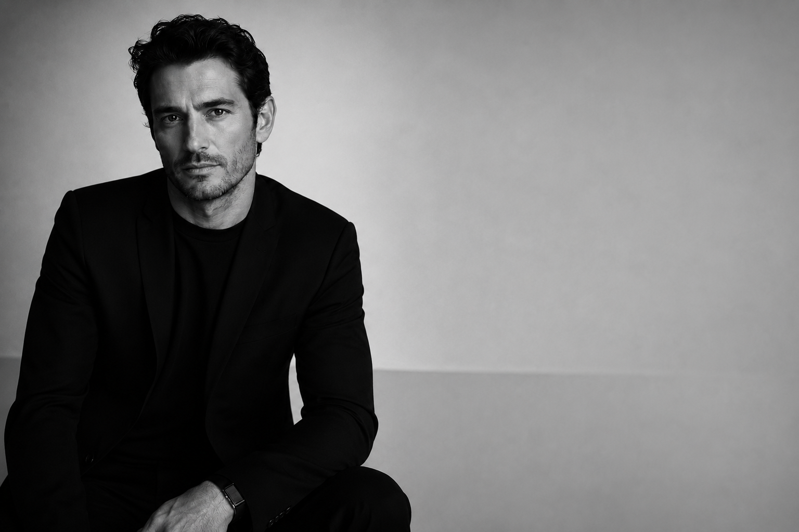

Maxime Oliver is the founder and creative director of UOMO Modello, an editorial archive dedicated to preserving the history of male modeling since 1998. What began as a personal passion for documenting influential faces in fashion evolved into a long-term publishing project focused on preserving the industry's visual legacy.
Rather than following seasonal trends, Oliver has spent decades cataloguing editorials, campaigns, runway appearances, photographers, agencies, and the careers that helped define modern menswear. His work reflects a belief that fashion history deserves careful preservation long after magazines leave the newsstand.
Known for his minimalist editorial philosophy and meticulous attention to detail, Oliver approaches each profile as both a historical record and a tribute to the artistry behind male fashion. Through UOMO Modello, he continues to celebrate the models, photographers, publications, and creative voices that have shaped generations of style.
"Modeling is more than an image. It is history, influence, and legacy. The archive exists so those stories are never forgotten."Explore UOMO Modello